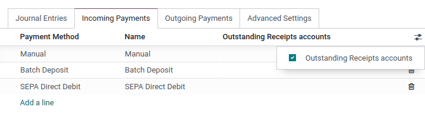

Cuentas bancarias y de efectivo¶
En su base de datos puede administrar todas las cuentas bancarias o de efectivo que necesite. Si las configura de la manera adecuada, podrá tener toda su información bancaria al día y lista para la conciliación con sus asientos contables.
En Contabilidad de Odoo cada cuenta bancaria tiene un diario exclusivo para registrar todas las entradas en una cuenta específica. Tanto el diario como la cuenta se crean y configuran de forma automática cuando se agrega una cuenta bancaria.
Nota
Los diarios y cuentas de efectivo deben configurarse manualmente.
Los diarios bancarios se muestran de forma predeterminada en el panel de control de Contabilidad en forma de tarjetas que incluyen botones de acción.

Administre sus cuentas bancarias y de efectivo.¶
Conecte su banco para la sincronización automática.¶
Para conectar su cuenta bancaria a su base de datos, vaya a «Contabilidad -> Configuración -> Bancos: Agregar una cuenta bancaria», seleccione su banco en la lista, haga clic en «Conectar» y siga las instrucciones.
Ver también
Crear una cuenta bancaria¶
Si su institución bancaria no está disponible en Odoo, o si no desea conectar su cuenta bancaria a su base de datos, puede configurar su cuenta bancaria de forma manual.
Para agregar de forma manual una cuenta bancaria, vaya a «Contabilidad -> Configuración -> Bancos: Agregar una cuenta bancaria», haga clic en «Crear» (en la parte inferior derecha) y complete el formulario.
Nota
Odoo detecta en automático el tipo de cuenta bancaria (por ejemplo, IBAN) y, por consiguiente, habilita algunas funciones.
Hay disponible un diario bancario predeterminado que se puede utilizar para configurar su cuenta bancaria yendo a «Contabilidad -> Configuración -> Contabilidad: Diarios -> Bancos». Ábralo y edite los diferentes campos para que coincidan con la información de su cuenta bancaria.
Crear un diario de efectivo¶
Para crear un nuevo diario de efectivo, vaya a , haga clic en Crear y seleccione Efectivo en el campo Tipo.
Para obtener más información sobre los campos de información contable, lea la sección Configuración de esta página.
Nota
Un diario de efectivo predeterminado está disponible y se puede utilizar de inmediato. Puede revisarlo yendo a .
Editar un diario bancario o de efectivo existente¶
Para editar un diario bancario existente, vaya a y escoja el diario que desea modificar.
Configuración¶
Puede editar la información contable y el número de cuenta bancaria de acuerdo con sus necesidades.

Ver también
Cuenta transitoria¶
Las transacciones del extracto bancario se registran en la :guilabel:`Cuenta transitoria hasta que la conciliación final permita encontrar la cuenta correcta.
Cuentas del estado de resultados¶
La Cuenta de ganancias se utiliza para registrar una ganancia cuando el saldo final de una caja registradora difiere del que el sistema calcula, mientras que la Cuenta de pérdidas se utiliza para registrar una pérdida cuando el saldo final de una caja registradora difiere del que el sistema calcula.
Moneda¶
Puede editar la moneda utilizada para ingresar los extractos.
Ver también
Número de cuenta¶
Si necesita editar los detalles de su cuenta bancaria, haga clic en la flecha de enlace externo junto a su Número de cuenta. En la nueva página, haga clic en la flecha de enlace externo junto a su Banco y actualice tu información bancaria como corresponda. Estos detalles se utilizan al registrar los pagos.

Conexiones bancarias¶
Conexiones bancarias define cómo se registran los estados de cuenta bancarios. Hay tres opciones disponibles:
Aún no definido, debe seleccionarse cuando aún no se sabe si se sincronizará o no la cuenta bancaria con la base de datos.
Importar (CAMT, CODA, CSV, OFX, QIF), debe seleccionarse si se desea importar el estado de cuenta bancario utilizando un formato diferente.
Sincronización bancaria automatizada, debe seleccionarse si su banco está sincronizado con la base de datos.
Ver también
Cuentas pendientes¶
De forma predeterminada, los pagos se registran a través de cuentas transitorias llamadas cuentas pendientes antes de registrarlos en su cuenta bancaria.
Una cuenta de pagos pendientes es donde se registran los pagos salientes hasta que se vinculan con un retiro de su estado de cuenta bancario.
Una cuenta de cobros pendientes es donde se registran los pagos entrantes hasta que se vinculan con un depósito en su estado de cuenta bancario.
Estas cuentas deben ser del tipo Activos corrientes.
Nota
El movimiento desde una cuenta pendiente a una cuenta bancaria se realiza automáticamente cuando concilia la cuenta bancaria con un estado de cuenta bancario.
Configuración predeterminada de cuentas¶
Las cuentas pendientes se definen de manera predeterminada. Si es necesario, puede actualizarlas yendo a y actualizar su Cuenta de cobros pendientes y Cuenta de pagos pendientes.
Configuración de diarios bancarios y en efectivo¶
También puede establecer cuentas pendientes específicas para cualquier diario del tipo Banco o Efectivo.
Desde el Tablero de control de Contabilidad, haga clic en la selección de menú ⋮ del diario que desea configurar, y haga clic en Configuración, luego abra la pestaña Pagos entrantes/salientes. Para mostrar la columna de cuentas pendientes, haga clic en el botón de alternancia y marque la casilla de Cuentas de cobros/pagos pendientes, luego actualice la cuenta.
Nota
Si no especifica una cuenta de pagos pendientes o una cuenta de cobros pendientes para un diario específico, Odoo utilizará las cuentas pendientes predeterminadas.
Si su cuenta bancaria principal se agrega como una cuenta de cobros pendientes o una cuenta de pagos pendientes, cuando se registra un pago, el estado de la factura o el recibo se establece directamente en Pagado.